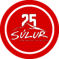

Experience Iceland's New Year's Eve Like a Local!
Join us in Akureyri for an unforgettable night of celebration. In Iceland, the sale and use of fireworks are primarily associated with New Year's Eve celebrations. Fireworks are legally available for purchase from December 28 to January 6.
By purchasing your fireworks from Súlur, the local search and rescue team, you're not only embracing Icelandic tradition but also supporting the dedicated volunteers who keep our community safe. All proceeds fund essential rescue operations and training.
Opening hours
| Day | Opening | Closing |
|---|
| Dec 28 | 10:00 | 22:00 |
| Dec 29 | 10:00 | 22:00 |
| Dec 30 | 10:00 | 22:00 |
| Dec 31 | 09:00 | 16:00 |
| Jan 4 | 14:00 | 20:00 |
| Jan 5 | 14:00 | 20:00 |
| Jan 6 | 16:00 | 20:00 |

Fireworks Sales Location
Bonfire Location
Fireworks Display shooting Area
Why Buy Fireworks from Us?

By buying fireworks from Súlur, you directly support ICE-SAR, Iceland’s volunteer-based rescue organization that responds to emergencies like avalanches, storms, and volcanic eruptions. ICE-SAR teams, including Súlur, are the backbone of Iceland’s emergency response, providing 24/7 assistance in one of the world’s most challenging environments. Your purchase helps fund vital training, equipment, and operations, ensuring safety for locals and visitors alike.
Want the Full Experience?

New Year's Eve in Iceland traditionally starts with Áramótabrennur—community bonfires symbolizing the end of the old year and a fresh start for the new one. Families and friends gather around the fire to enjoy the warmth, share stories, and celebrate the spirit of togetherness.
- Location: Akureyri's bonfire is held at the southern end of town, close to the golf course. Precise location is shown on the map provided. Here you can see available parking area for the bonfire if coming by car
- Time: The bonfire is lit at 8:30 PM.
- It’s a beautiful experience to share with locals and visitors alike, offering an authentic taste of Icelandic tradition.
After the bonfire, the evening continues with a stunning fireworks display held by Súlur, björgunarsveitin á Akureyri, Akureyri’s local search and rescue team. The display showcases the importance of fireworks in Iceland's celebrations, as well as the vital work done by rescue teams like Súlur. Of course, someone has to pay for the fireworks used in the display, and this year the display is brought to you by Norðurorka Ltd. - Utility Company and Höldur Car rental/Europcar.
- Time: The fireworks display starts at approximately 9:00 PM.
- Location: The shooting location can be seen in the map provided, but the display can be seen across Akureyri, creating a perfect lead-up to the rest of the night.
At 10:30 PM, almost everyone in Iceland heads home to watch Áramótaskaupið, a satirical comedy show that reviews the year’s events with humor and wit. It’s a must-watch tradition, bringing laughter to families as they prepare to welcome the new year.
When the clock strikes midnight, Iceland’s skies come alive with a spectacular display of fireworks. This is when individuals and families light their own fireworks, creating a breathtaking, uncoordinated yet mesmerizing show. The tradition is deeply rooted in Icelandic culture, symbolizing hope, joy, and celebration for the year ahead.
In Akureyri, the view is especially magical, as the fireworks reflect off the snowy landscapes and the surrounding fjord, creating an unforgettable experience.
Go to Map
{kind=link}